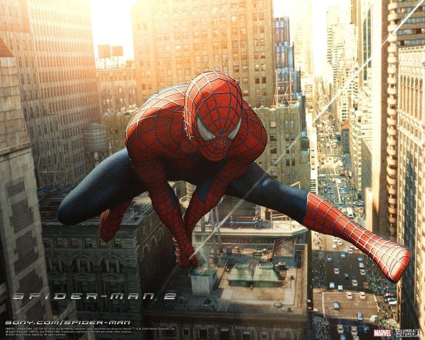
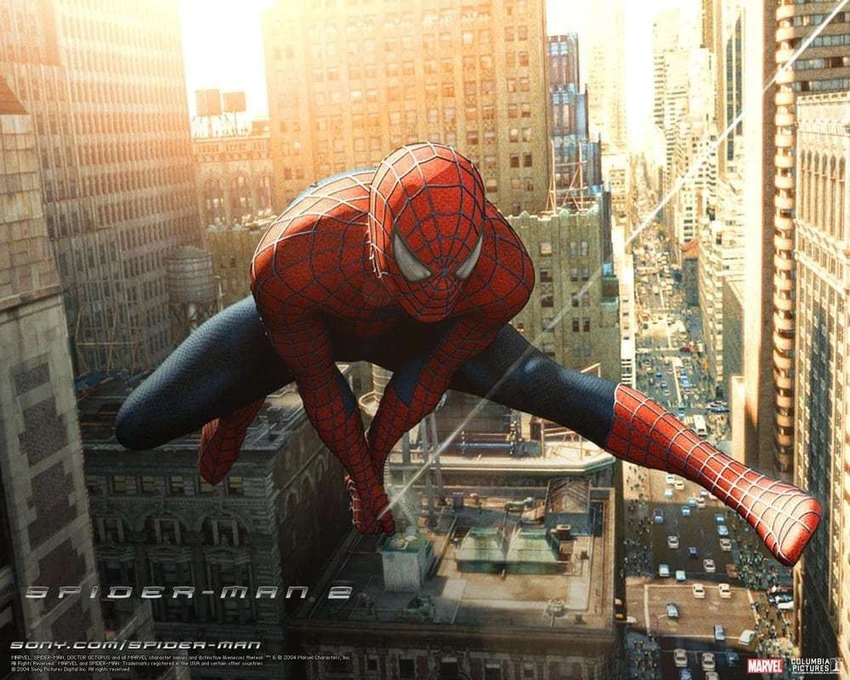

Spider-man:No way home->Spider-Man: No Way Home is a 2021 American superhero film based on the Marvel Comics character Spider-Man, co-produced by Columbia Pictures and Marvel Studios, and distributed by Sony Pictures Releasing. It is the sequel to Spider-Man: Homecoming (2017) and Spider-Man: Far From Home (2019), and the 27th film in the Marvel Cinematic Universe (MCU).

The Amazing spider-man 2->The Amazing Spider-Man 2 (internationally titled The Amazing Spider-Man 2: Rise of Electro)[6] is a 2014 American superhero film based on the Marvel Comics character Spider-Man. Produced by Columbia Pictures in association with Marvel Entertainment, Arad Productions, Inc., Matt Tolmach Productions, and Ingenious Film Studios, and distributed by Sony Pictures Releasing.

Spider-Man 2-> Spider-Man 2 is a 2004 American superhero film based on the Marvel Comics character of Spider-Man. Directed by Sam Raimi and written by Alvin Sargent from a story conceived by Michael Chabon and the writing team of Alfred Gough and Miles Millar, the film was produced by Columbia Pictures in association with Marvel Enterprises and Laura Ziskin Productions, and distributed by Sony Pictures Releasing.
Morever this film won 3 academy awards (OSCAR) for it's visual effects, sound mixing and sound editing.


Spider-Man-Into the spider-verse->Spider-Man: Into the Spider-Verse is a 2018 American animated superhero film featuring the Marvel Comics character Miles Morales / Spider-Man, produced by Columbia Pictures and Sony Pictures Animation in association with Marvel Entertainment, and distributed by Sony Pictures Releasing. It is the first animated film in the Spider-Man franchise and the first film in the Spider-Verse franchise, which is set in a shared multiverse of alternate universes called the "Spider-Verse".
This film won OSCAR for it's best animation.